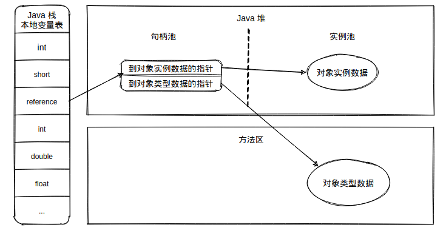

1 JVM运行时数据区域
1.1 PC程序计数器
- 当前线程执行的字节码的行号指示器，占用空间小，也无法干涉。
- 个线程之间独立存储，互不影响。
程序计数器的实际作用：
- 字节码解释器通过改变程序计数器来依次读取指令，从而实现代码控制流程。如：顺序执行、选择、循环、异常处理。
- 在多线程的情况下，程序计数器用于记录当前线程执行的位置，从而当线程被切换回来的时候能够知道该线程上次运行到的位置。
tips: 程序计数器是唯一一个不会出现OutOfMemoryError的内存区域，它的生命周期随着线程的创建而创建，随着线程的结束而死亡。
1.2 虚拟机栈（JVM Stack）
- 每个线程私有（JVM会为每个线程都分配一个JVM栈）
- 线程在运行时，在执行的每个方法都会打包成一个栈帧-存储了局部变量表，操作数栈，动态链接，方法出口等信息，然后放入栈。
- 每个时刻正在执行的当前方法就是虚拟机栈栈顶的栈帧，方法执行结束后，这个栈帧就会被弹出栈。
- 方法的执行就对应着栈帧在虚拟机栈中入栈和出栈的过程。
- 栈的大小缺省为1M，可用参数 -Xss调整大小，例如-Xss256k。
tips：如果线程请求的栈深度大于虚拟机所允许的深度，将抛出StackOverflowError异常；如果虚拟机栈可以动态扩展，如果扩展时无法申请到足够的内存，就会抛出OutOfMemoryError异常。
1.3 堆（Heap）
几乎所有的对象都分配在这里，也是垃圾回收发生的主要区域（因此也称为GC堆）
细分为新生代和老年代，再细致一点有：Eden空间、From Survivor、To Survivor空间。进一步划分的目的是更好地回收内存，或者更快地分配内存。
堆内存的相关调整参数：
参数 说明 -Xms 堆的最小值 -Xmx 堆的最大值 -Xmn 新生代的大小 -XX:NewSize 新生代最小值 -XX:MaxNewSize 新生代最大值 例如：-Xmx256m
堆空间结构
eden区，s0区，s1区都属于新生代。tentired区属于老年代。
对象晋升：大部分情况下，对象都会首先在Eden区分配，在一次新生代垃圾回收后，如果对象还存活，则会进入 s0或者s1，并且对象的年龄会加1（Eden区迁移到Survivor区后对象的初始年龄变为1），当它的年龄增加到一定程度(默认为15岁)，就会被晋升到老年代中。对象晋升到老年代的年龄阈值,可以通过参数
-XX:MaxTenuringThreshold来设置。
1.3 方法区/永久代（Method Area）
- 用于存储已经被虚拟机加载的类信息，常量，静态常量，即时编译器编译后的代码。
- 方法区的相关调整参数：
版本 参数 JDK1.7以前 -XX:PermSize;-XX:MaxPermSizeJDK1.8以后 -XX:MetaspaceSize;-XX:MaxMetaspaceSizetips：JDK1.8以后大小就只受本机总内存的限制。示例：
-XX:MaxMetaspaceSize=3M。Java虚拟机规范把方法区描述为堆的一个逻辑部分，但是它却有一个别名叫做 Non-Heap（非堆），目的应该是与 Java 堆区分开来。
为什么去永久代：整个永久代有一个JVM本身设置固定大小上限，无法进行调整，而元空间使用的是本地内存，受本机可用内存的限制，并且永远不会得到java.lang.OutOfMemoryError。你可以使用 -XX:MaxMetaspaceSize标志设置最大元空间大小，默认值为 unlimited，这意味着它只受系统内存的限制。-XX:MetaspaceSize调整标志定义元空间的初始大小如果未指定此标志，则Metaspace将根据运行时的应用程序需求动态地重新调整大小。
1.3.1 运行时常量池
在JDK1.6中，运行时常量池是方法区的一部分，用于存放编译期生成的各种字面量(“zdy” , “123”等)和符号引用。
1.4 直接内存
- 不是虚拟机运行时数据区的一部分，也不是Java虚拟机规范中定义的内存区域。
- 如果使用了NIO，这块区域会被频繁使用，在Java堆内可以用
DirectByteBuffer对象直接引用并操作。 - 这块内存不受Java堆大小限制，但受本机总内存的限制，可以通过
-XX:MaxDirectMemorySize来设置（默认与堆内存最大值一样），所以也会出现OOM异常。
1.5 各版本内存区域的变化
JDK 1.6中运行时常量池是属于方法区的。JDK 1.7中将运行时常量池移动到了堆中。
JDK 1.8中使用元空间代替了方法区。tips：永久代用来存储类信息、常量、静态变量等数据不是个好主意，很容易遇到内存溢出的问题。对永久代进行调优是很困难的，同时将元空间与堆的垃圾回收进行隔离，避免永久代引发的Full GC 和 OOM等问题。同时所有的线程私有的内存区域都是在编译时确定所需的内存大小。
1.6 深入辨析堆和栈
- 功能
- 栈内存是以栈帧的方式存储方法调用的过程，并存储方法调用过程中基本数据类型的变量(int、short、long、byte、float、double、boolean、char等)以及对象的引用变量，其内存分配在栈上，变量出了作用域就会自动释放。
- 而堆内存用来存储Java中的对象。无论是成员变量，局部变量，还是类变量，它们指向的对象都存储在堆内存中。
- 线程独享还是共享
- 栈内存归属于单个线程，每个线程都会有一个栈内存，其存储的变量只能在其所属线程中可见，即栈内存可以理解成线程的私有内存。
- 堆内存中的对象对所有线程可见。堆内存中的对象可以被所有线程访问。
- 空间大小
- 栈的内存要远远小于堆内存
1.7 栈帧结构与方法出入栈
- 方法会打包成栈帧，一个栈帧至少要包含局部变量表，操作数栈和帧数据区
- 堆、栈、方法区的联系

1.8 栈上分配
- 虚拟机提供的一种优化技术，基本思想是，对于线程私有的对象，将它打散分配在栈上，而不是分配在堆上。
- 好处是对象跟着方法调用自行销毁，不需要进行垃圾回收，可以提高性能。
- 栈上分配需要的技术基础，逃逸分析，标量替换。
- 逃逸分析的目的是判断对象的作用域是否会逃逸出方法体。注意，任何可以在多个线程之间共享的对象，一定都属于逃逸对象。
1.9 栈上分配的启用
- -server（JVM运行的模式之一, server模式才能进行逃逸分析， JVM运行的模式还有mix/client）
- -Xmx10m和-Xms10m（堆的大小）
- -XX:+DoEscapeAnalysis（启用逃逸分析[默认打开]）
- -XX:+PrintGC（打印GC日志）
- -XX:+EliminateAllocations（标量替换[默认打开]）
- -XX:-UseTLAB（关闭本地线程分配缓冲，TLAB：ThreadLocalAllocBuffer）
对栈上分配发生影响的参数就是三个，
-server、-XX:+DoEscapeAnalysis和-XX:+EliminateAllocations，任何一个发生变化都不会发生栈上分配，因为启用逃逸分析和标量替换默认是打开的，所以，在我们的例子中，JVM的参数只用-server一样可以有栈上分配的效果。
2 虚拟机中的对象
2.1 对象的创建
检查加载
先执行相应的类加载过程。内存分配
虚拟机将为新生对象分配内存。为对象分配空间的任务等同于把一块确定大小的内存从Java堆中划分出来。
内存分配的方法：- 指针碰撞：如果Java堆内存中内存是绝对规整的，所有用过的内存都放在一边，空闲的内存存放在另一边，中间放着一个指针作为分界点的指示器，那所分配内存就仅仅是把那个指针向空闲空间那边挪动一段与对象大小相等的距离。
- 空闲列表：如果Java堆中的内存并不是规整的，已使用的内存和空闲的内存相互交错，那就没有办法简单地进行指针碰撞了，虚拟机就必须维护一个列表，记录上哪些内存块是可用的，在分配的时候从列表中找到一块足够大的空间划分给对象实例，并更新列表上的记录。
tips: 选择哪种分配方式由Java堆是否规整决定，而Java堆是否规整又由所采用的垃圾收集器是否带有压缩整理功能决定。
并发安全问题：除如何划分可用空间之外，还有另外一个需要考虑的问题是对象创建在虚拟机中是非常频繁的行为，即使是仅仅修改一个指针所指向的位置，在并发情况下也并不是线程安全的，可能出现正在给对象A分配内存，指针还没来得及修改，对象B又同时使用了原来的指针来分配内存的情况。
并发安全问题的两种解决方案CAS + 失败重试：这是一种对分配内存空间的动作进行同步处理的方式，CAS 是乐观锁的一种实现方式。所谓乐观锁就是，每次不加锁而是假设没有冲突而去完成某项操作，如果因为冲突失败就重试,直到成功为止。虚拟机采用 CAS 配上失败重试的方式保证更新操作的原子性。
TLAB：这种是把内存分配的动作按照线程划分在不同的空间之中进行，为每一个线程预先在Eden区分配一块内存，JVM在给线程中的对象分配内存时，首先在TLAB分配，当对象大于TLAB中的剩余内存或TLAB的内存已用尽时，再采用上述的CAS进行内存分配。
本地线程分配缓冲（Thread Local Allocation Buffer, TLAB），即每个线程在Java堆中预先分配一小块私有内存。如果设置了虚拟机参数
-XX:UseTLAB，在线程初始化时，同时也会申请一块指定大小的内存，只给当前线程使用，这样每个线程都单独拥有一个Buffer，如果需要分配内存，就在自己的Buffer上分配，这样就不存在竞争的情况，可以大大提升分配效率，当Buffer容量不够的时候，再重新从Eden区域申请一块继续使用。
TLAB的目的是在为新对象分配内存空间时，让每个Java应用线程能在使用自己专属的分配指针来分配空间，减少同步开销。
TLAB只是让每个线程有私有的分配指针，但底下存对象的内存空间还是给所有线程访问的，只是其它线程无法在这个区域分配而已。当一个TLAB用满（分配指针top撞上分配极限end了），就新申请一个TLAB。
内存空间初始化
内存分配完成后，虚拟机需要将分配到的内存空间都初始化为零值(如int值为0，boolean值为false等等)。这一步操作保证了对象的实例字段在Java代码中可以不赋初始值就直接使用，程序能访问到这些字段的数据类型所对应的零值。设置对象
接下来，虚拟机要对对象进行必要的设置，例如这个对象是哪个类的实例、如何才能找到类的元数据信息、对象的哈希码、对象的GC分代年龄等信息。这些信息存放在对象的对象头之中。对象初始化
在上面工作都完成之后，从虚拟机的视角来看，一个新的对象已经产生了，但从Java程序的视角来看，对象创建才刚刚开始，所有的字段都还为零值。所以，一般来说，执行new指令之后会接着把对象按照程序员的意愿进行初始化，这样一个真正可用的对象才算完全产生出来。
2.2 对象的内存布局
在HotSpot虚拟机中，对象在内存中存储的布局可以分为3块区域：对象头（Header）、实例数据（Instance Data）和对齐填充（Padding）。
- 对象头包括两部分信息，第一部分用于存储对象自身的运行时数据，如哈希码（HashCode）、GC分代年龄、锁状态标志、线程持有的锁、偏向线程ID、偏向时间戳等。
- 对象头的另外一部分是类型指针，即对象指向它的类元数据的指针，虚拟机通过这个指针来确定这个对象是哪个类的实例。
- 第三部分对齐填充并不是必然存在的，也没有特别的含义，它仅仅起着占位符的作用。由于HotSpot VM的自动内存管理系统要求对对象的大小必须是8字节的整数倍。当对象其他数据部分没有对齐时，就需要通过对齐填充来补全。
2.3 对象的访问定位
建立对象是为了使用对象，我们的Java程序需要通过栈上的reference数据来操作堆上的具体对象。目前主流的访问方式有使用句柄和直接指针两种。
- 如果使用句柄访问的话，那么Java堆中将会划分出一块内存来作为句柄池，reference中存储的就是对象的句柄地址，而句柄中包含了对象实例数据与类型数据各自的具体地址信息。
 - 如果使用直接指针访问， reference中存储的直接就是对象地址。
tips:
- 这两种对象访问方式各有优势，使用句柄来访问的最大好处就是reference中存储的是稳定的句柄地址，在对象被移动（垃圾收集时移动对象是非常普遍的行为）时只会改变句柄中的实例数据指针，而reference本身不需要修改。
- 使用直接指针访问方式的最大好处就是速度更快，它节省了一次指针定位的时间开销，由于对象的访问在Java中非常频繁，因此这类开销积少成多后也是一项非常可观的执行成本。
对Sun HotSpot而言，它是使用直接指针访问方式进行对象访问的。